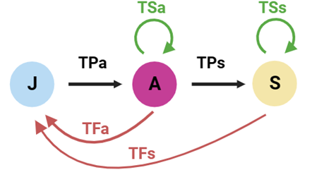
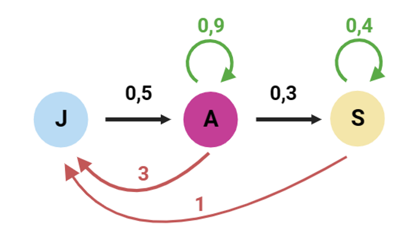
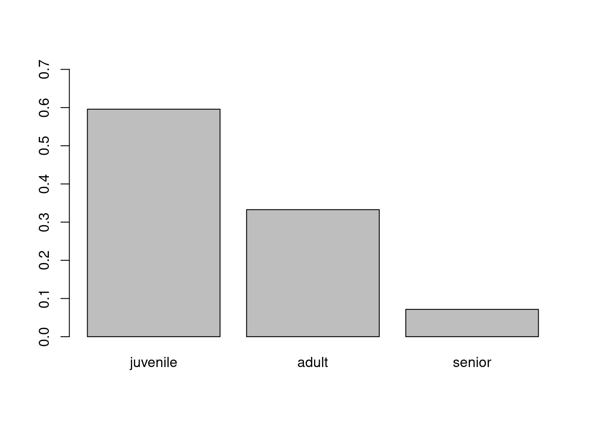
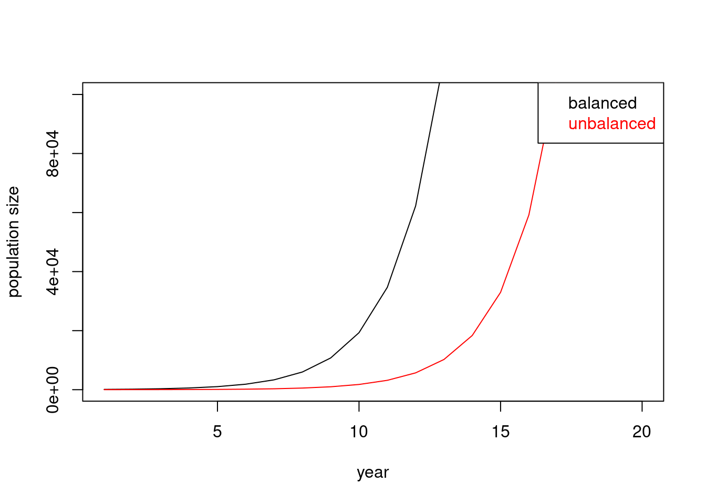
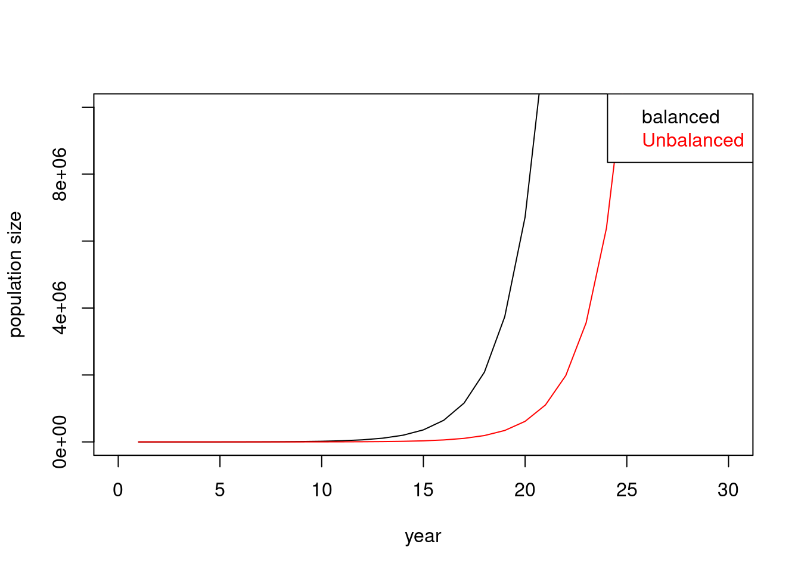
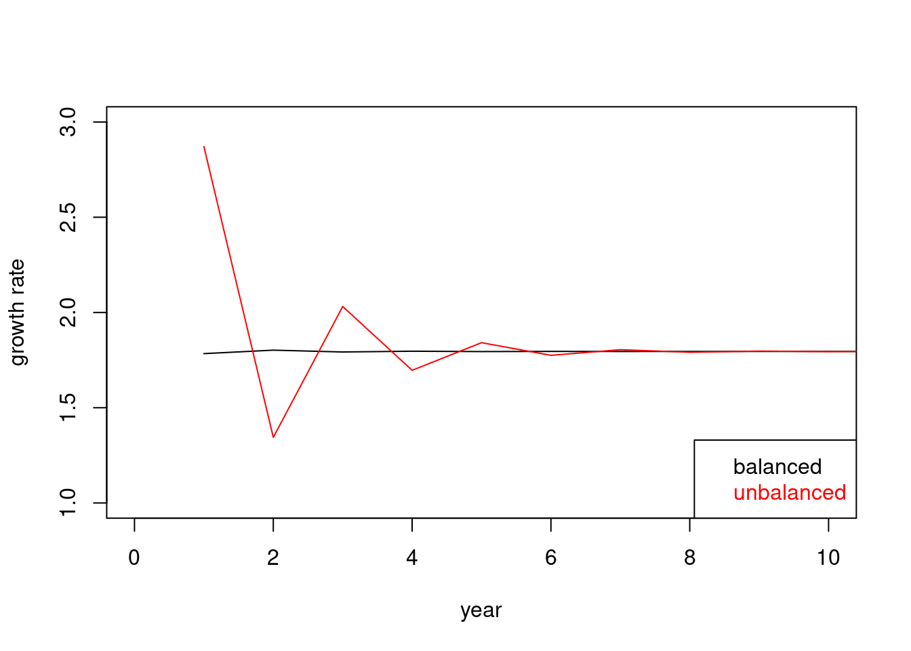
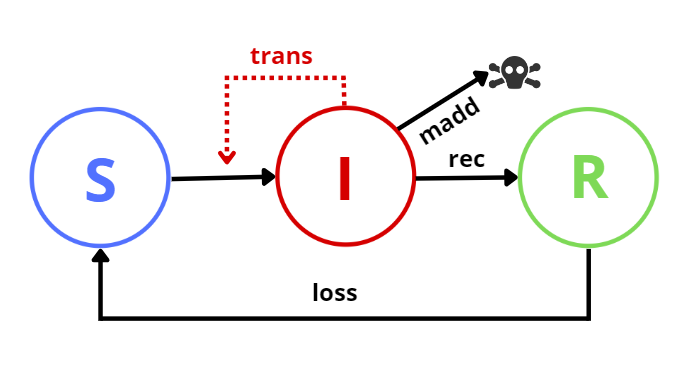
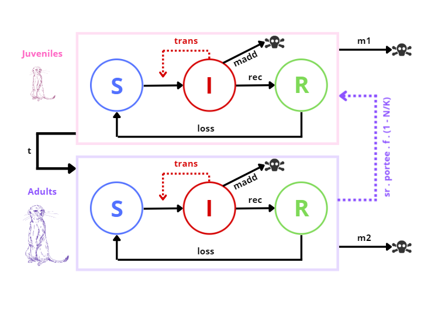
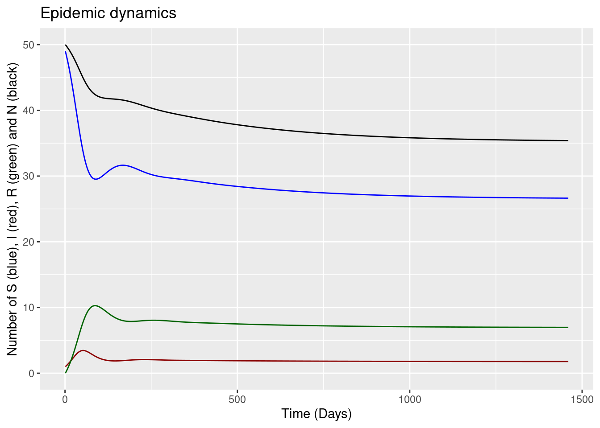
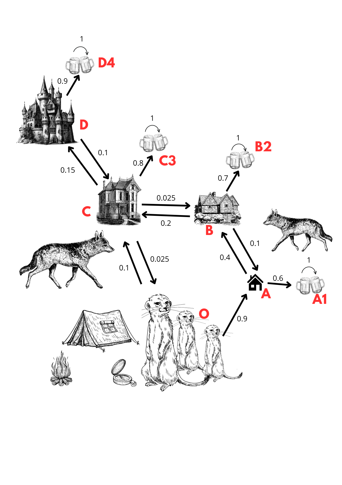

matrix(nrow = 2, ncol = 2) [,1] [,2]
[1,] NA NA
[2,] NA NASummary :
I. Foundations of matric modelling in ecology A. Why using matric modelling in ecology B. Transform a population into a matrix C. How can we modify a simplified population matrix ?
Leslie matrix A. Meerkat life cycle B. Leslie matrix
Epidemiology matrices A. Introduction to epidemiology with the SIRS model B. Taking population dynamics and structure into account C. Setting up the model in R D. Visualizing results
Markov chain A- The Markov Chain B- The transition Matrix C- Evolution of the system D- Eigenvalues and eigenvectors
I. Foundations of matrix modelling in ecology
A. Why using matrix modelling in ecology ? Matrices are mathematical tools for modeling situations. Used in many fields, ecology is no exception . Matrices make it possible to represent populations and make them evolve according to different rules or events. The first uses of these models date back to 1941 by Harro Bernardelli which studied the oscillations of the structure of a population (Smith D. and Keyfitz N., 2012). Others use later matrices to represent populations, including Leslie in 1945 whose work marked a turning point in the use of matrices in ecology (Charles S., 2004). Subsequently, different models of matrix representation of populations were published and used in population dynamics.
The objective of a population matrix is, as we have already said, to represent the evolution of a population over time and its state at a particular time “t” for example, which will be represented as discreet in this chapter. This matrix is therefore based on population growth behaviours. Let’s recall the basics to better understand how population matrices were created :
In 1798, Malthus published his population growth model. If we consider N(t) as the population size at time t, and λ the rate of growth of this population, we can write that:
\[ N(t+1) = λN(t) \] If we want to write this equation for the population in a distant future, we can find by recurrence that :
\[ N(t) = λ^tN(0) \] with N(0) the population at the beginning of our study.
Depending on the sign of λ, our population will therefore increase or decrease over time (Hoppensteadt F.C., 1982). However, this model is largely simplified. Why? It considers that all individuals are identical, whether by their reproductive capacity or their ability to survive. This means that in this model, an elderly individual can reproduce and survive just as well as a young and vigorous individual who has just reached sexual maturity ((Frisman E.Ya. et al., 2021).
But then, how can we solve this problem? In the wild, each individual is different, but we can predict his qualities according to the average of his species and his position in the population: by position, we mean his place in different categories expressed according to various criteria such as age (young, adult, old), sex (male, female), or many others. These categories are commonly referred to as “classes”. Several individuals of the same class will have the same characteristics from the point of view of the criterion used for this class, and therefore will have the same impacts on the dynamics of their population. For example, they will have the same fertility or the same survival rate. Thus, we can determine the contribution of each class to another class and thus ultimately to the population, and this according to the size of the first class.
The size of a class “i” can thus be written:
\[ \begin{equation*} n_i(t+1) = \sum_j (a_{ij} \cdot n_j(t)) \end{equation*} \]
Where “a” is the contribution and a_ij the contribution of a class “j” to class “i” at time t+1. We can then create a system considering all the classes, which can be translated into a matrix:
\[
\begin{equation}
N(t+1) = A \cdot N(t)
\end{equation}
\]
\[
\begin{equation}
N(t) = A^t \cdot N(0)
\end{equation}
\] Where A is what we call a population projection matrix, representing our population in a matrix form, according to its different characteristics (classes, class parameters, etc.). N(t) is a vector dependent on the number of individuals present in our population, and N(0) is our initial population vector, from which we will be able to make this population evolve over time.
Population dynamic is a concept that is sometimes difficult to study because it depends on many parameters. A population will vary in size and type of individuals through four main processes: - The birth of new individuals, depending on the fertility of those already present and their number; - mortality, which may depend on predation, disease or old age ; - immigration, the rates of which will depend on other populations, their distances from those studied and the dispersal capacity of individuals; - emigration, which will depend on the lifestyle of the species studied and its tendency to leave its original population.
A matrix will allow to represent the population variation according to these four processes (Schaub M. and Abadi F., 2011 ; Abadi et al., 2010).

These representations can be very complete, including differences in age, gender, genetic origin and other individuals. Indeed, not all individuals will have the same impact on their population dynamics. Too young or too old individuals do not participate in reproduction and therefore in the future increase of their group. The number of males will not have the same impact on the number of offspring as the females. Finally, individuals of different ages will not have the same mortality rates. Matrices are thus widely used in epidemiology, where they will allow to model the spread of the disease in a population according to the virulence and infectivity of the disease. They may also focus on the population’s response to the disease, depending on individual mortality rates and resilience.
It is important to know that modeling matrices have limitations. They are based in particular on hypotheses that will allow their correct analysis and the validity of their results. Thus, interactions between individuals are not taken into account, and do not affect the dynamics of their population. Then, the caracteristics of individuals of the same class are identical, regardless of the individual, and constant over time. Different caracteristics are only found in different classes.
By allowing to model as correctly as possible the evolution of a population over time, according to the maximum of parameters that can positively or negatively impact it, we can obtain many very interesting results. Thus, population matrices can allow us to improve species conservation and management. Depending on the dynamics of its population, we can know if the species is threatened in the future and/or impacted by events (example: impact of fire (Hoffmann W.A., 1999)). We can have a more global and real vision of how populations evolve in their environment. However, matrix models may not be always necessary. As for each study, it is important to ask ourselves the right questions, to think about the interest of this mode of analysis compared to others and its relevance for the question/ population studied.
B. Transform a population into a matrixWe were able to see what are the interests of making population matrices for our research. From now on, we will see together how to create these matrices.
The first thing to do before creating our matrix is to collect data. Scientists regularly conduct long-term monitoring and capture-recapture measurements to obtain maximum information on the population they wish to study. These processes also make it possible to know additional information such as the age of individuals and their gender for example.
It is necessary to know the different parameters that we will apply to our population dynamics. Thus, as we saw earlier, the population evolves according to four main concepts: births, deaths, immigration and emigration.
In order to correctly model the population that we study, we must be able to express these phenomena in the matrix. For this, we need to know how many individuals die, are born, immigrate or emigrate. These numbers will depend of the species but also on the individuals already present in the population. To represent births, we must know the fertility rate of the females already present: in short, how many females, how many young on average, which females are able to reproduce and how many females will be fertilized. Then, to represent the death of individuals we must know the mortality (or survival) rate of individuals in this population. It will depend on the composition of our population such as the age of its individuals, the average lifespan of the species and the rates of predation or death by disease for example. In terms of immigration rates, they will depend (as mentioned earlier in the first part) on the presence and distance of other populations around and the faculty/tendency of dispersal of the species. Finally, emigration rates will be based similarly on the same things, and also depend on the individuals already present.
To have all these parameters, we must already know a minimum of things about the species/population studied. These information can be retrieved during the population study project or in the literature, depending on what we want to study.
Obviously, depending on the question and the complexity of the study, these parameters may be more or less precise (for example, population of an invasive species with no predator, and therefore a mortality rate dependent on fewer factors).
Once all the parameters are known, we can formulate equations reflecting the evolution of the population according to these criteria. It is useful before making our matrix to realize a life cycle diagram of the studied population (Charles S., 2004).
To help you understand how matrix modeling of populations works, we will use an example more and more complex of a population matrix throughout our chapter.
We will take a population of meerkats as an example. Meerkats are a social species living in more or less numerous groups, with all kinds of individuals of different sex and age. They are also animals able to change groups by leaving theirs or by integrating a new one if the conditions oblige it. Finally, they are under pressure from different predators and potential diseases. Therefore, they will perfectly allow us to represent our population matrices with a maximum of criteria.
To start, we will begin with a very simplified situation:
A serious epidemic decimated the original colony of a meerkat family, forcing them to immigrate to find a new one. The family is healthy and does not have the disease. It is composed of a male and a female, as well as their two young, a young male and a young female. If we look for the lifestyle of meerkats in the literature, we obtain in particular that females have 2 to 5 young per year. They can have young from one year old. In our example, we will consider an average of 3 cubs per year. In addition, individuals live on average 12 years (Réserve de Sigean, 2023).
We can represent our small, simplified population in a basic matrix form. Thus:
\[ \begin{equation} P_1 = \begin{bmatrix} M_1 & M_2 \\ F_1 & F_2 \end{bmatrix} \end{equation} \]
In practice, it is rather rare to consider both sexes in population matrices. This is due to the greater complexity it would require to also consider gender interactions. For simplicity, the models are often based on females only (female-based model), mainly because of the importance of females for the number of descendants and the greater ease in calculating their number of descendants, compared to a male (Girel S., 2020 ; ) .
We will now see how to represent our population matrix on R, which will be our main tool in this chapter to manipulate and understand the dynamics of our population. To create a matrix similar to the one shown above, simply type this command:
matrix(nrow = number of rows desired , ncol = number of columns desired) thus in our case:
matrix(nrow = 2, ncol = 2) [,1] [,2]
[1,] NA NA
[2,] NA NAFor now, this matrix is empty. If we wanted to fill it directly, we could also use a vector as information:
matrix(data = c(1, 1, 1, 1) , nrow = 2) [,1] [,2]
[1,] 1 1
[2,] 1 1We could also make a matrix with our abbreviations if we wanted:
matrix(data = c("M1 " , "F1 " , "M2" , "F2 " ), nrow = 2) [,1] [,2]
[1,] "M1 " "M2"
[2,] "F1 " "F2 "Finally, we can create a matrix from a list, which can be very convenient if our data set, our population, is represented in this form. In our current case, our list would be very simple since we only have four values. But this makes it easier to write our matrix if our list is much longer.
liste <- list(1, 1, 1, 1)
#ou alors
liste2 <- list("M1 " , "F1 " , "M2 " , "F2 " )
matrix <- matrix(data = liste, nrow = 2)
matrix [,1] [,2]
[1,] 1 1
[2,] 1 1 #ou
matrix2 <- matrix(data = liste2, nrow = 2)
matrix2 [,1] [,2]
[1,] "M1 " "M2 "
[2,] "F1 " "F2 "Here, our model represents a stable population, at the moment t. It does not allow us to observe its evolution for the moment. In order to use it in population dynamics, we will have to make it more complex.
C. How can we modify a simplified population matrix ?Before making our matrix suitable for the study of population dynamics, we will start by seeing how simple matrix manipulations can allow us to modify the matrix representation of our population if the latter is modified. Let’s take our family of meerkats: during the journey, the young male is captured by a predator, which removes a member from the population and therefore changes the matrix. Similarly, later on, a lone male, lost, is welcomed by the family. Thus, our matrix will be successively modified in these ways:
\[ \begin{equation} P_2 = \begin{bmatrix} M_1 & M_2 \\ F_1 & F_2 \end{bmatrix} - \begin{bmatrix} 0 & M_2 \\ 0 & 0 \end{bmatrix} = \begin{bmatrix} M_1-0 & M_2-M_2 \\ F_1-0 & F_2-0 \end{bmatrix} = \begin{bmatrix} M_1 & 0 \\ F_1 & F_2 \end{bmatrix} \end{equation} \] \[ \begin{equation} P_3 = \begin{bmatrix} M_1 & 0 \\ F_1 & F_2 \end{bmatrix} + \begin{bmatrix} M_1 & 0 \\ 0 & 0 \end{bmatrix} = \begin{bmatrix} M_1+M_1 & 0 \\ F_1+0 & F_2+0 \end{bmatrix} = \begin{bmatrix} 2M_1 & 0 \\ F_1 & F_2 \end{bmatrix} \end{equation} \]
Thus, our final matrix represents our final population : two adult males, one young female and one adult female, with zero young males. The matrix does not represent each individual personally but the size of each group (adult male, adult female, young male, young female). It is important to remember that we can only add or subtract matrices with the same dimension.
Subsequently, our new family finally joined a large group of meerkats residing in the area. This colony has 30 individuals, whose composition is revealed in the following matrix:
\[ \begin{equation} P_n = \begin{bmatrix} 11M_1 & 3M_2 \\ 14F_1 & 2F_2 \end{bmatrix} \end{equation} \]
If we compile our two populations, we get our final population which is composed of 34 individuals:
\[ \begin{equation} P = \begin{bmatrix} 13M_1 & 3M_2 \\ 15F_1 & 3F_2 \end{bmatrix} \end{equation} \]
It is from this population that we will develop the rest of our chapter, which will explain how we can study the evolution of this group over time, according to different parameters.
If we want to perform these calculations on R, the commands are quite simple. We have seen in the previous part how to create matrices on the software. If we want to compile them, just use the operation «+» or «-» as numbers. Of course, it is also necessary here to have matrices of the same dimension.
P1 <- matrix(data = c(1, 1, 1, 1) , nrow = 2)
M <- matrix(data = c(1, 1, 0, 1) , nrow = 2)
P2 = P1 - M
P2 [,1] [,2]
[1,] 0 1
[2,] 0 0N <- matrix(data = c(1, 0, 0, 0) , nrow = 2)
P3 <- P2 + N
P3 [,1] [,2]
[1,] 1 1
[2,] 0 0Pn <- matrix(data = c(11, 14, 3, 2) , nrow = 2)
P = P3 + Pn
P [,1] [,2]
[1,] 12 4
[2,] 14 2Subsequently, we will need to multiply our population matrix with other matrices in order to make it evolve over time. So we will take advantage of this chapter to show you now how to do this. Once again, we will start by reviewing the calculation rules of matrices, then their applications in R. First, to multiply two matrices, they do not have to have the same dimension, unlike addition and subtraction operations. However, the number of columns in the first matrix must be equal to the number of rows in the second. Indeed, the multiplication of the two matrices will be a cross of the columns of one with the rows of the other, so it is important to have an equivalent number between the two. Let’s take the example of Pn, with a lambda B matrix for the moment. We will see in the next chapter which matrix is useful to multiply in reality with our population matrix.
\[ \begin{equation} P_n \mathbf{B} = \mathbf{P'}\mathbf{B} = \begin{bmatrix} 11M_1 & 3M_2 \\ 14F_1 & 2F_2 \end{bmatrix} * \begin{bmatrix} a & c \\ b & d \end{bmatrix} \end{equation} \]
\[ \begin{equation} \mathbf{P'}\mathbf{B} = \begin{bmatrix} 11M_1 \ast a + 3M_2 \ast b & 11M_1 \ast c + 3M_2 \ast d \\ 14F_1 \ast a + 2F_2 \ast b & 14F_1 \ast c + 2F_2 \ast d \end{bmatrix} \end{equation} \]
As mentioned just before, matrices are not necessarily of the same dimension:
\[ \begin{equation} P_n \mathbf{N} = \mathbf{P'}\mathbf{N} = \begin{bmatrix} 11M_1 & 3M_2 \\ 14F_1 & 2F_2 \end{bmatrix} * \begin{bmatrix} a \\ b \end{bmatrix} \end{equation} \]
\[ \begin{equation} P_n \mathbf{N} = \begin{bmatrix} 11M_1 \ast a + 3M_2 \ast b \\ 14F_1 \ast a + 2F_2 \ast b \end{bmatrix} \end{equation} \]
It is important to note that most of the time, multiplications are not commutative: we do not get the same result by doing Pn x B as by doing B x Pn. The order of multiplication is important, on the contrary of the multiplication of numbers that can be reversed as desired.
\[ \begin{equation} \mathbf{B} \times P_n = \begin{bmatrix} a & c \\ b & d \end{bmatrix} \times \begin{bmatrix} 11M_1 & 3M_2 \\ 14F_1 & 2F_2 \end{bmatrix} = \begin{bmatrix} a \ast 11M_1 + c \ast 14F_1 & a \ast 3M_2 + c \ast 2F_2 \\ b \ast 11M_1 + d \ast 14F_1 & b \ast 3M_2 + d \ast 2F_2 \end{bmatrix} \end{equation} \]
Now that the matrix product calculations necessary for our future models are generally acquired, we will see how to perform them on R. If we simply want to multiply our matrix with a number, the sign “*” is enough:
\[ \begin{equation} P_m = 2 \times P_n \end{equation} \]
If we want to multiply several matrices together, we must add the symbol ‘%’ for each matrix, in addition to ’*’. Thus:
N <- matrix(data = c(2, 4) , nrow = 2)
Pf = Pn %*% N Leslie matrix
A. Meerkat life cycle
We’re now back with our meerkat family 10 years later. During this decade, our population has evolved and different age classes have formed. First of all, we have the class of juveniles, noted J, which are between 0 and 1 year old and correspond to individuals not yet sexually mature. Only a small proportion of these juveniles reach adulthood, following a rate of passage noted TPa. Then we move on to the adult age class, noted A, which can reproduce with a fecundity rate noted TFa and which are all between 1 and 10 years old. Adult meerkat females survive from one year to the next with a survival rate of TSa, and only a small proportion of these females make it to the next age class. reach the senior age class, following a passage rate noted TPs.
For the sake of our story, we’ll consider that from the age of 10 our adult meerkats belong to the senior age class, noted S, and that they have a lower fecundity rate than adults, noted TFs. Senior female meerkats survive from one year to the next with a survival rate noted TSs.
With all this information, we can draw the following tree of life:

To complete this cycle , we search for data corresponding the most to reality in the wild. Thus, we estimate that :
With all this information, we can complete our life cycle:

If we note, for any instant t (time being counted in years, so that t is an integer), Jt the number of juvenile meerkats, At the number of adults and St the number of seniors, we get :
\[ N_t = J_t + A_t + S_t \]
This corresponds to the total number of meerkats in the study population.
The above assumptions translate into the following equations:
\[ \begin{align*} J_{t+1} &= 0 \cdot J_t + TF_a \cdot A_t + TF_s \cdot S_t \\ A_{t+1} &= TP_a \cdot J_t + TS_a \cdot A_t + 0 \cdot S_t \\ S_{t+1} &= 0 \cdot J_t + TP_s \cdot A_t + TS_s \cdot S_t \end{align*} \]
We can then replace them with our values:
\[ \begin{align*} J_{t+1} &= 0 \cdot J_t + 3 \cdot A_t + 1 \cdot S_t \\ A_{t+1} &= 0.5 \cdot J_t + 0.9 \cdot A_t + 0 \cdot S_t \\ S_{t+1} &= 0 \cdot J_t + 0.3 \cdot A_t + 0.4 \cdot S_t \end{align*} \]
B. Leslie matrixThis second system allows us to establish a matrix. The use of a matrix will enable us to determine various parameters, such as the growth rate, to understand and predict the evolution of the population over time. This type of matrix has a name : the Leslie matrix. The term “Leslie matrix” refers to the British economist and demographer Patrick Leslie, who introduced this method of demographic modeling in the 1940s. Initially developed to study the growth of insect populations, it was later adapted and extended to human and animal demographic modeling.
So, we can create this matrix:
\[ \begin{bmatrix} 0 & TF_a & TF_s \\ TP_a & TS_a & 0 \\ 0 & TP_s & TS_s \\ \end{bmatrix} \]
This matrix is constructed in such a way that we have Jt+1, At+1 and St+1 in column order, and Jt, At and St in row order. You will notice that on the first row we have the indicators concerning the fertility of our individuals, noted TF. On the diagonal we have the parameters concerning survival and on the diagonal below those concerning the probability of passing from one age stage to another.
So, if we replace by our values, we obtain the following matrix :
\[ \begin{bmatrix} 0 & 3 & 1 \\ 0.5 & 0.9 & 0 \\ 0 & 0.3 & 0.4 \\ \end{bmatrix} \]
Now that we have our matrix, we can enter it into the R software in order to perform various calculations, which we’ll detail later:
To enter and create our matrix in R, we’ll write the following lines:
TF_a = 3
TF_s = 1
TP_a = 0.5
TS_a = 0.9
TP_s = 0.3
TS_s = 0.4
leslie<-c(0,TF_a,TF_s,TP_a,TS_a,0,0,TP_s,TS_s)
# With this line of code we have created our list named leslie, which includes all the parameters present in our life cycle
matrice<-matrix(data=leslie, nrow = 3,ncol = 3, byrow=TRUE, dimnames = )
# The matrix() function transforms this list into a matrixThen, in order to perform all the calculations related to our matrix, we need to install a package called popbio
#install.packages("popbio")
library(popbio)Thanks to this package, we can calculate various parameters:
The first parameter we’ll calculate is the growth rate. The growth rate is a demographic indicator that shows the evolution of a population at a given time. In our example, we obtain it as follows:
growth_rate = lambda(matrice)This gives us a growth rate of 1.795362. Our growth rate is greater than 1, indicating that our population is increasing. This type of rate is generally associated with factors such as a high birth rate, low mortality, positive net migration, or a combination of these. It indicates that our population is dynamic and growing. If the growth rate had been less than 1, it would have indicated that our population was in decline. Typically, these types of growth rates are associated with aging populations, with negative demographic trends. This is not the case in our meerkat population.
Now that we know our population is growing, let’s look at generation time. Generation time is the average time it takes for each individual to be replaced in the population. So we’re going to use the generation.time() function available in the popbio package.
generation.time(matrice)[1] 4.890923# 4.890923In our case, the time step we have taken is 1 year, so we have a generation time of 4.8 years. Generation time represents the average length of time between the birth of a parent generation and the birth of the next generation, giving us a perspective on how demographic characteristics are transmitted across generations.
We’re now going to calculate the stable age structure, which will be in the form of a proportion per age class, and which represents the expected distribution of the different age groups in a stationary population. age groups in a stationary population. To obtain these proportions, it is generally assumed that the population is stable in the sense that the number of births, deaths and migrants are balanced, and that the age distribution remains constant.
To calculate them, we do this :
stable.stage(matrice)[1] 0.59577168 0.33269876 0.07152956# 0.59577168 0.33269876 0.07152956So, assuming a stable population, we would need: 60% juveniles, 33% adults and 0.07% seniors.
This stable age structure can be represented as follows:
barplot(stable.stage(matrice),names.arg=c("juvenile","adult","senior"),ylim = c(0,0.7))
We can also calculate the reproductive values for each age class, enabling us to assess the contribution of each age group to reproduction and population growth. The reproductive value of an age class is calculated by taking into account the survival rates and reproductive rates specific to each age class. It represents the average number of offspring that an individual of a particular age class can expect to produce during its lifetime.
We can therefore write :
reproductive.value(matrice)[1] 1.0000000 3.5907241 0.7166599# 1.0000000 3.5907241 0.7166599We thus obtain: 1 corresponding to the basic index (juvenile class), 3.59 (adult class), 0.71 (senior class). Since juveniles can’t reproduce, we don’t take this class into account, hence the 1. We can see that it’s the adults who contribute the most to reproduction, and that the seniors contribute just a little.
We can then calculate how long it will take our population to recover from a disturbance. This concept is important because it is often linked to the notion of demographic resilience. Demographic resilience refers to the ability of a population to recover recover from disruptions such as natural disasters, epidemics, environmental changes, or other events likely to affect population structure or size.
To do this, we write this :
damping.ratio(matrice)[1] 2.226831# we obtain 2.23 which we will multiplicate by the generation time
damping.ratio(matrice)*generation.time(matrice)[1] 10.89126# we obtain 10.89126We can see that it would take about 11 years for our population to recover from a disruption such as a natural disaster, environmental change etc…
Now that we’ve seen how our population behaves, let’s look at projections for different population sizes.
First, when the population is in a state close to stable, i.e. 60% juveniles, 33% adults and 7% seniors. We’ll start with a time step of 20.
pop.projection(matrice,c(60,33,7),20) #proche de la stucture stable$lambda
[1] 1.795362
$stable.stage
[1] 0.59577168 0.33269876 0.07152956
$stage.vectors
0 1 2 3 4 5 6 7 8
[1,] 60 106.0 191.80 343.180 617.0860 1107.1270 1988.3121 3569.2419 6408.4831
[2,] 33 59.7 106.73 191.957 344.3513 618.4592 1110.1768 1993.3151 3578.6046
[3,] 7 12.7 22.99 41.215 74.0731 132.9346 238.7116 428.5377 769.4096
9 10 11 12 13 14 15
[1,] 11505.223 20656.302 37085.330 66581.763 119538.23 214614.51 385310.66
[2,] 6424.986 11535.099 20709.740 37181.431 66754.17 119847.87 215170.34
[3,] 1381.345 2480.034 4452.543 7993.939 14352.00 25767.05 46261.18
16 17 18 19
[1,] 691772.20 1241981.5 2229806.4 4003309.7
[2,] 386308.63 693563.9 1245198.2 2235581.6
[3,] 83055.57 149114.8 267715.1 480645.5
$pop.sizes
[1] 100.000 178.400 321.520 576.352 1035.510 1858.521
[7] 3337.200 5991.095 10756.497 19311.554 34671.435 62247.613
[13] 111757.133 200644.407 360229.435 646742.179 1161136.405 2084660.164
[19] 3742719.735 6719536.860
$pop.changes
[1] 1.784000 1.802242 1.792585 1.796663 1.794787 1.795622 1.795246 1.795414
[9] 1.795339 1.795373 1.795357 1.795364 1.795361 1.795362 1.795362 1.795362
[17] 1.795362 1.795362 1.795362# we enter the name of the matrix, a vector with the initial size of each class and the number of time steps
# we get population sizes per year (popsize) and growth rates (popchanges)
# $pop.sizes
# [1] 100.000 178.400 321.520 576.352 1035.510 1858.521 3337.200 5991.095 10756.497
# [10] 19311.554 34671.435 62247.613 111757.133 200644.407 360229.435 646742.179 1161136.405 2084660.164
# [19] 3742719.735 6719536.860
# $pop.changes
# [1] 1.784000 1.802242 1.792585 1.796663 1.794787 1.795622 1.795246 1.795414 1.795339 1.795373 1.795357 1.795364
# [13] 1.795361 1.795362 1.795362 1.795362 1.795362 1.795362 1.795362Thus, we can see with the pop.sizes that after 19 years, in a stable situation, we would have a population of 6719536.860 individuals and that the growth rate from 1.784000 to 1.795362.
And if we run this simulation over 100 time steps, we get :
pop.projection(matrice,c(60,33,7),100)$lambda
[1] 1.795362
$stable.stage
[1] 0.59577168 0.33269876 0.07152956
$stage.vectors
0 1 2 3 4 5 6 7 8
[1,] 60 106.0 191.80 343.180 617.0860 1107.1270 1988.3121 3569.2419 6408.4831
[2,] 33 59.7 106.73 191.957 344.3513 618.4592 1110.1768 1993.3151 3578.6046
[3,] 7 12.7 22.99 41.215 74.0731 132.9346 238.7116 428.5377 769.4096
9 10 11 12 13 14 15
[1,] 11505.223 20656.302 37085.330 66581.763 119538.23 214614.51 385310.66
[2,] 6424.986 11535.099 20709.740 37181.431 66754.17 119847.87 215170.34
[3,] 1381.345 2480.034 4452.543 7993.939 14352.00 25767.05 46261.18
16 17 18 19 20 21 22
[1,] 691772.20 1241981.5 2229806.4 4003309.7 7187390.3 12903968 23167294
[2,] 386308.63 693563.9 1245198.2 2235581.6 4013678.3 7206006 12937389
[3,] 83055.57 149114.8 267715.1 480645.5 862932.7 1549277 2781512
23 24 25 26 27 28 29
[1,] 41593679 74675712 134069938 240704075 432150956 775867417 1392962898
[2,] 23227297 41701407 74869122 134417179 241327498 433270227 777876912
[3,] 4993822 8965718 16096709 28899420 51884922 93152218 167241955
30 31 32 33 34 35
[1,] 2500872692 4489971866 8061124990 14472637702 25983624162 46650012146
[2,] 1396570670 2507349949 4501600887 8082003293 14510121815 26050921714
[3,] 300259856 539075143 967835042 1737614283 3119646701 5600895225
36 37 38 39 40
[1,] 83753660368 150368141452 269965251242 484685360705 870185691679
[2,] 46770835616 83970582239 150757594741 270664460888 485940695152
[3,] 10055634604 18053504527 32412576482 58192309015 104476261872
41 42 43 44 45
[1,] 1.562298e+12 2.804891e+12 5.035795e+12 9.041075e+12 1.623200e+13
[2,] 8.724395e+11 1.566345e+12 2.812156e+12 5.048838e+12 9.064492e+12
[3,] 1.875727e+11 3.367609e+11 6.046078e+11 1.085490e+12 1.948847e+12
46 47 48 49 50
[1,] 2.914232e+13 5.232102e+13 9.393517e+13 1.686476e+14 3.027836e+14
[2,] 1.627404e+13 2.921780e+13 5.245653e+13 9.417846e+13 1.690844e+14
[3,] 3.498886e+12 6.281768e+12 1.127805e+13 2.024818e+13 3.635281e+13
51 52 53 54 55
[1,] 5.436061e+14 9.759698e+14 1.752219e+15 3.145868e+15 5.647971e+15
[2,] 3.035678e+14 5.450140e+14 9.784975e+14 1.756757e+15 3.154015e+15
[3,] 6.526645e+13 1.171769e+14 2.103750e+14 3.776992e+14 6.781069e+14
56 57 58 59 60
[1,] 1.014015e+16 1.820525e+16 3.268501e+16 5.868142e+16 1.053544e+17
[2,] 5.662599e+15 1.016642e+16 1.825240e+16 3.276966e+16 5.883340e+16
[3,] 1.217447e+15 2.185759e+15 3.924228e+15 7.045410e+15 1.264906e+16
61 62 63 64 65
[1,] 1.891493e+17 3.395914e+17 6.096896e+17 1.094613e+18 1.965227e+18
[2,] 1.056273e+17 1.896392e+17 3.404710e+17 6.112686e+17 1.097449e+18
[3,] 2.270965e+16 4.077204e+16 7.320057e+16 1.314215e+17 2.359492e+17
66 67 68 69 70
[1,] 3.528295e+18 6.334566e+18 1.137284e+19 2.041837e+19 3.665836e+19
[2,] 1.970317e+18 3.537433e+18 6.350973e+18 1.140230e+19 2.047125e+19
[3,] 4.236142e+17 7.605409e+17 1.365446e+18 2.451470e+18 4.401277e+18
71 72 73 74 75
[1,] 6.581502e+19 1.181618e+20 2.121432e+20 3.808738e+20 6.838064e+20
[2,] 3.675330e+19 6.598548e+19 1.184678e+20 2.126926e+20 3.818603e+20
[3,] 7.901885e+18 1.418674e+19 2.547034e+19 4.572849e+19 8.209919e+19
76 77 78 79 80
[1,] 1.227680e+21 2.204130e+21 3.957212e+21 7.104628e+21 1.275538e+22
[2,] 6.855775e+20 1.230860e+21 2.209839e+21 3.967461e+21 7.123029e+21
[3,] 1.473978e+20 2.646324e+20 4.751109e+20 8.529960e+20 1.531437e+21
81 82 83 84 85
[1,] 2.290052e+22 4.111473e+22 7.381582e+22 1.325261e+23 2.379324e+23
[2,] 1.278841e+22 2.295983e+22 4.122122e+22 7.400700e+22 1.328694e+23
[3,] 2.749483e+21 4.936318e+21 8.862478e+21 1.591136e+22 2.856664e+22
86 87 88 89 90
[1,] 4.271747e+23 7.669333e+23 1.376923e+24 2.472075e+24 4.438270e+24
[2,] 2.385486e+23 4.282811e+23 7.689197e+23 1.380489e+24 2.478478e+24
[3,] 5.128747e+22 9.207957e+22 1.653162e+23 2.968024e+23 5.328677e+23
91 92 93 94 95
[1,] 7.968301e+24 1.430599e+25 2.568442e+25 4.611284e+25 8.278924e+25
[2,] 4.449765e+24 7.988939e+24 1.434304e+25 2.575095e+25 4.623227e+25
[3,] 9.566904e+23 1.717606e+24 3.083724e+24 5.536401e+24 9.939844e+24
96 97 98 99
[1,] 1.486367e+26 2.668566e+26 4.791042e+26 8.601655e+26
[2,] 8.300366e+25 1.490216e+26 2.675478e+26 4.803451e+26
[3,] 1.784562e+25 3.203935e+25 5.752222e+25 1.032732e+26
$pop.sizes
[1] 1.000000e+02 1.784000e+02 3.215200e+02 5.763520e+02 1.035510e+03
[6] 1.858521e+03 3.337200e+03 5.991095e+03 1.075650e+04 1.931155e+04
[11] 3.467143e+04 6.224761e+04 1.117571e+05 2.006444e+05 3.602294e+05
[16] 6.467422e+05 1.161136e+06 2.084660e+06 3.742720e+06 6.719537e+06
[21] 1.206400e+07 2.165925e+07 3.888619e+07 6.981480e+07 1.253428e+08
[26] 2.250358e+08 4.040207e+08 7.253634e+08 1.302290e+09 2.338082e+09
[31] 4.197703e+09 7.536397e+09 1.353056e+10 2.429226e+10 4.361339e+10
[36] 7.830183e+10 1.405801e+11 2.523922e+11 4.531354e+11 8.135421e+11
[41] 1.460603e+12 2.622311e+12 4.707997e+12 8.452559e+12 1.517540e+13
[46] 2.724534e+13 4.891525e+13 8.782059e+13 1.576697e+14 2.830743e+14
[51] 5.082208e+14 9.124403e+14 1.638161e+15 2.941092e+15 5.280324e+15
[56] 9.480093e+15 1.702020e+16 3.055742e+16 5.486163e+16 9.849649e+16
[61] 1.768369e+17 3.174862e+17 5.700026e+17 1.023361e+18 1.837304e+18
[66] 3.298625e+18 5.922226e+18 1.063254e+19 1.908926e+19 3.427213e+19
[71] 6.153088e+19 1.104702e+20 1.983340e+20 3.560814e+20 6.392950e+20
[76] 1.147766e+21 2.060655e+21 3.699622e+21 6.642161e+21 1.192508e+22
[81] 2.140984e+22 3.843842e+22 6.901088e+22 1.238995e+23 2.224445e+23
[86] 3.993684e+23 7.170108e+23 1.287294e+24 2.311159e+24 4.149367e+24
[91] 7.449615e+24 1.337476e+25 2.401253e+25 4.311118e+25 7.740018e+25
[96] 1.389614e+26 2.494859e+26 4.479176e+26 8.041742e+26 1.443784e+27
$pop.changes
[1] 1.784000 1.802242 1.792585 1.796663 1.794787 1.795622 1.795246 1.795414
[9] 1.795339 1.795373 1.795357 1.795364 1.795361 1.795362 1.795362 1.795362
[17] 1.795362 1.795362 1.795362 1.795362 1.795362 1.795362 1.795362 1.795362
[25] 1.795362 1.795362 1.795362 1.795362 1.795362 1.795362 1.795362 1.795362
[33] 1.795362 1.795362 1.795362 1.795362 1.795362 1.795362 1.795362 1.795362
[41] 1.795362 1.795362 1.795362 1.795362 1.795362 1.795362 1.795362 1.795362
[49] 1.795362 1.795362 1.795362 1.795362 1.795362 1.795362 1.795362 1.795362
[57] 1.795362 1.795362 1.795362 1.795362 1.795362 1.795362 1.795362 1.795362
[65] 1.795362 1.795362 1.795362 1.795362 1.795362 1.795362 1.795362 1.795362
[73] 1.795362 1.795362 1.795362 1.795362 1.795362 1.795362 1.795362 1.795362
[81] 1.795362 1.795362 1.795362 1.795362 1.795362 1.795362 1.795362 1.795362
[89] 1.795362 1.795362 1.795362 1.795362 1.795362 1.795362 1.795362 1.795362
[97] 1.795362 1.795362 1.795362We would then go from an initial population of 1.000000e+02 individuals to a population of 1.443784e+27 individuals. In terms of growth rate, we’d go from 1.784000 to 1.795362.
We can thus observe a very significant growth in this population.
Nevertheless, this stable population situation is not representative of reality. So let’s try with other initial effectics, with an unbalanced structure.
pop.projection(matrice,c(1,4,2),20) #unbalanced structure$lambda
[1] 1.795363
$stable.stage
[1] 0.59577175 0.33269869 0.07152956
$stage.vectors
0 1 2 3 4 5 6 7 8
[1,] 1 14.0 14.30 34.100 54.3320 103.07060 180.58526 327.81192 585.64093
[2,] 4 4.1 10.69 16.771 32.1439 56.09551 102.02126 182.11176 327.80655
[3,] 2 2.0 2.03 4.019 6.6389 12.29873 21.74815 39.30564 70.35578
9 10 11 12 13 14 15
[1,] 1053.7754 1890.0233 3394.7959 6093.6624 10941.318 19642.83 35266.634
[2,] 587.8464 1055.9494 1895.3662 3403.2275 6109.736 10969.42 19693.894
[3,] 126.4843 226.9476 407.5639 731.6354 1313.622 2358.37 4234.174
16 17 18 19
[1,] 63315.857 113675.30 204087.99 366412.09
[2,] 35357.822 63479.97 113969.62 204616.65
[3,] 7601.838 13648.08 24503.22 43992.18
$pop.sizes
[1] 7.0000 20.1000 27.0200 54.8900 93.1148 171.4648
[7] 304.3547 549.2293 983.8033 1768.1061 3172.9204 5697.7260
[13] 10228.5253 18364.6763 32970.6213 59194.7022 106275.5168 190803.3528
[19] 342560.8318 615020.9209
$pop.changes
[1] 2.871429 1.344279 2.031458 1.696389 1.841435 1.775027 1.804570 1.791243
[9] 1.797215 1.794531 1.795736 1.795194 1.795437 1.795328 1.795377 1.795355
[17] 1.795365 1.795361 1.795363pop.projection(matrice,c(1,4,2),100)$lambda
[1] 1.795362
$stable.stage
[1] 0.59577168 0.33269876 0.07152956
$stage.vectors
0 1 2 3 4 5 6 7 8
[1,] 1 14.0 14.30 34.100 54.3320 103.07060 180.58526 327.81192 585.64093
[2,] 4 4.1 10.69 16.771 32.1439 56.09551 102.02126 182.11176 327.80655
[3,] 2 2.0 2.03 4.019 6.6389 12.29873 21.74815 39.30564 70.35578
9 10 11 12 13 14 15
[1,] 1053.7754 1890.0233 3394.7959 6093.6624 10941.318 19642.83 35266.634
[2,] 587.8464 1055.9494 1895.3662 3403.2275 6109.736 10969.42 19693.894
[3,] 126.4843 226.9476 407.5639 731.6354 1313.622 2358.37 4234.174
16 17 18 19 20 21 22
[1,] 63315.857 113675.30 204087.99 366412.09 657842.14 1181065.0 2120439.1
[2,] 35357.822 63479.97 113969.62 204616.65 367361.03 659546.0 1184123.9
[3,] 7601.838 13648.08 24503.22 43992.18 78981.87 141801.1 254584.2
23 24 25 26 27 28 29
[1,] 3806955.9 6834863.9 12271055 22030986 39553597 71013025 127494089
[2,] 2125931.0 3816815.9 6852566 12302837 22088047 39656040 71196949
[3,] 457070.9 820607.6 1473288 2645085 4748885 8525968 15307199
30 31 32 33 34 35 36
[1,] 228898046 410954861 737812751 1324640997 2378210146 4269748188 7665743761
[2,] 127824299 229490892 412019233 739723686 1328071815 2384369707 4280806830
[3,] 27481964 49340075 88583298 159039089 285532741 512634641 920364768
37 38 39 40 41 42
[1,] 13762785258 24709182039 44361927153 79645719458 142992900331 256724023394
[2,] 7685598028 13798430854 24773178788 44476824486 79852001766 143363251755
[3,] 1652387956 2966634591 5326183093 9562426874 17168018095 30822807768
43 44 45 46 47
[1,] 460912563034 827504913463 1.485671e+12 2.667317e+12 4.788800e+12
[2,] 257388938277 462106325966 8.296482e+11 1.489519e+12 2.674225e+12
[3,] 55338098634 99351920936 1.783727e+11 3.202435e+11 5.749530e+11
48 49 50 51 52
[1,] 8.597629e+12 1.543586e+13 2.771295e+13 4.975478e+13 8.932785e+13
[2,] 4.801203e+12 8.619897e+12 1.547584e+13 2.778473e+13 4.988365e+13
[3,] 1.032249e+12 1.853260e+12 3.327273e+12 5.973660e+12 1.072488e+13
53 54 55 56 57
[1,] 1.603758e+14 2.879327e+14 5.169434e+14 9.281005e+14 1.666276e+15
[2,] 8.955921e+13 1.607912e+14 2.886784e+14 5.182823e+14 9.305043e+14
[3,] 1.925505e+13 3.456978e+13 6.206527e+13 1.114296e+14 2.000565e+14
58 59 60 61 62
[1,] 2.991569e+15 5.370950e+15 9.642800e+15 1.731232e+16 3.108188e+16
[2,] 1.670592e+15 2.999318e+15 5.384861e+15 9.667775e+15 1.735716e+16
[3,] 3.591739e+14 6.448472e+14 1.157734e+15 2.078552e+15 3.731753e+15
63 64 65 66 67
[1,] 5.580322e+16 1.001870e+17 1.798719e+17 3.229352e+17 5.797856e+17
[2,] 3.116238e+16 5.594775e+16 1.004465e+17 1.803378e+17 3.237716e+17
[3,] 6.699848e+15 1.202865e+16 2.159579e+16 3.877225e+16 6.961023e+16
68 69 70 71 72
[1,] 1.040925e+18 1.868837e+18 3.355239e+18 6.023869e+18 1.081503e+19
[2,] 5.812872e+17 1.043621e+18 1.873677e+18 3.363929e+18 6.039471e+18
[3,] 1.249756e+17 2.243764e+17 4.028368e+17 7.232380e+17 1.298474e+18
73 74 75 76 77
[1,] 1.941689e+19 3.486034e+19 6.258693e+19 1.123662e+20 2.017380e+20
[2,] 1.084304e+19 1.946718e+19 3.495063e+19 6.274903e+19 1.126572e+20
[3,] 2.331231e+18 4.185403e+18 7.514314e+18 1.349091e+19 2.422108e+19
78 79 80 81 82
[1,] 3.621928e+20 6.502672e+20 1.167465e+21 2.096022e+21 3.763119e+21
[2,] 2.022605e+20 3.631309e+20 6.519513e+20 1.170489e+21 2.101451e+21
[3,] 4.348560e+19 7.807240e+19 1.401682e+20 2.516527e+20 4.518077e+20
83 84 85 86 87
[1,] 6.756161e+21 1.212975e+22 2.177730e+22 3.909814e+22 7.019531e+22
[2,] 3.772865e+21 6.773659e+21 1.216117e+22 2.183370e+22 3.919940e+22
[3,] 8.111584e+20 1.456323e+21 2.614627e+21 4.694202e+21 8.427792e+21
88 89 90 91 92
[1,] 1.260260e+23 2.262623e+23 4.062227e+23 7.293168e+23 1.309388e+24
[2,] 7.037712e+22 1.263524e+23 2.268483e+23 4.072748e+23 7.312058e+23
[3,] 1.513094e+22 2.716551e+22 4.877192e+22 8.756326e+22 1.572078e+23
93 94 95 96 97
[1,] 2.350825e+24 4.220582e+24 7.577473e+24 1.360431e+25 2.442466e+25
[2,] 1.312779e+24 2.356914e+24 4.231513e+24 7.597098e+24 1.363954e+25
[3,] 2.822448e+23 5.067317e+23 9.097668e+23 1.633361e+24 2.932474e+24
98 99
[1,] 4.385110e+25 7.872860e+25
[2,] 2.448792e+25 4.396467e+25
[3,] 5.264852e+24 9.452316e+24
$pop.sizes
[1] 7.000000e+00 2.010000e+01 2.702000e+01 5.489000e+01 9.311480e+01
[6] 1.714648e+02 3.043547e+02 5.492293e+02 9.838033e+02 1.768106e+03
[11] 3.172920e+03 5.697726e+03 1.022853e+04 1.836468e+04 3.297062e+04
[16] 5.919470e+04 1.062755e+05 1.908034e+05 3.425608e+05 6.150209e+05
[21] 1.104185e+06 1.982412e+06 3.559147e+06 6.389958e+06 1.147229e+07
[26] 2.059691e+07 3.697891e+07 6.639053e+07 1.191950e+08 2.139982e+08
[31] 3.842043e+08 6.897858e+08 1.238415e+09 2.223404e+09 3.991815e+09
[36] 7.166753e+09 1.286692e+10 2.310077e+10 4.147425e+10 7.446129e+10
[41] 1.336850e+11 2.400129e+11 4.309101e+11 7.736396e+11 1.388963e+12
[46] 2.493692e+12 4.477079e+12 8.037978e+12 1.443108e+13 2.590902e+13
[51] 4.651606e+13 8.351317e+13 1.499364e+14 2.691901e+14 4.832936e+14
[56] 8.676871e+14 1.557812e+15 2.796837e+15 5.021335e+15 9.015115e+15
[61] 1.618539e+16 2.905864e+16 5.217078e+16 9.366544e+16 1.681634e+17
[66] 3.019142e+17 5.420452e+17 9.731674e+17 1.747188e+18 3.136835e+18
[71] 5.631754e+18 1.011104e+19 1.815297e+19 3.259116e+19 5.851292e+19
[76] 1.050519e+20 1.886062e+20 3.386163e+20 6.079389e+20 1.091470e+21
[81] 1.959585e+21 3.518164e+21 6.316377e+21 1.134018e+22 2.035974e+22
[86] 3.655310e+22 6.562604e+22 1.178225e+23 2.115340e+23 3.797802e+23
[91] 6.818429e+23 1.224155e+24 2.197801e+24 3.945849e+24 7.084227e+24
[96] 1.271875e+25 2.283477e+25 4.099667e+25 7.360387e+25 1.321456e+26
$pop.changes
[1] 2.871429 1.344279 2.031458 1.696389 1.841435 1.775027 1.804570 1.791243
[9] 1.797215 1.794531 1.795736 1.795194 1.795437 1.795328 1.795377 1.795355
[17] 1.795365 1.795361 1.795363 1.795362 1.795362 1.795362 1.795362 1.795362
[25] 1.795362 1.795362 1.795362 1.795362 1.795362 1.795362 1.795362 1.795362
[33] 1.795362 1.795362 1.795362 1.795362 1.795362 1.795362 1.795362 1.795362
[41] 1.795362 1.795362 1.795362 1.795362 1.795362 1.795362 1.795362 1.795362
[49] 1.795362 1.795362 1.795362 1.795362 1.795362 1.795362 1.795362 1.795362
[57] 1.795362 1.795362 1.795362 1.795362 1.795362 1.795362 1.795362 1.795362
[65] 1.795362 1.795362 1.795362 1.795362 1.795362 1.795362 1.795362 1.795362
[73] 1.795362 1.795362 1.795362 1.795362 1.795362 1.795362 1.795362 1.795362
[81] 1.795362 1.795362 1.795362 1.795362 1.795362 1.795362 1.795362 1.795362
[89] 1.795362 1.795362 1.795362 1.795362 1.795362 1.795362 1.795362 1.795362
[97] 1.795362 1.795362 1.795362In this case, we also observe a very significant growth in our population.
To differentiate between the two, we use graphical representations.
# over 20 years for population size
plot((pop.projection(matrice,c(60,33,7),20)$pop.sizes),type="l",ylim=c(100,100000),ylab="population size",xlab="year")
lines(pop.projection(matrice,c(1,4,2),20)$pop.sizes,type="l",col="red")
legend("topright",legend=c("balanced","unbalanced"),text.col=c("black","red")) 
# over 100 years for population size
plot((pop.projection(matrice,c(60,33,7),100)$pop.sizes),type="l",xlim = c(0,30), ylim=c(100,10000000),ylab="population size",xlab="year")
lines(pop.projection(matrice,c(1,4,2),100)$pop.sizes,type="l",col="red")
legend("topright",legend=c("balanced","Unbalanced"),text.col=c("black","red")) 
# over 20 years for growth rate
plot((pop.projection(matrice,c(60,33,7),20)$pop.changes),type="l",xlim = c(0,10),ylim=c(1,3),ylab="growth rate",xlab="year")
lines(pop.projection(matrice,c(1,4,2),20)$pop.changes,type="l",col="red")
legend("bottomright",legend=c("balanced","unbalanced"),text.col=c("black","red"))
# over 100 years on growth rate
plot((pop.projection(matrice,c(60,33,7),100)$pop.changes),type="l",xlim = c(0,10),ylim=c(1,3),ylab="growth rate",xlab="year")
lines(pop.projection(matrice,c(1,4,2),100)$pop.changes,type="l",col="red")
legend("bottomright",legend=c("balanced","unbalanced"),text.col=c("black","red")) Finally, using the elasticity() function, we can see that the highest rate will contribute the most to the evolution of our population:
elasticity(matrice) [,1] [,2] [,3]
[1,] 0.0000000 0.30186317 0.021633323
[2,] 0.3234965 0.32517220 0.000000000
[3,] 0.0000000 0.02163332 0.006201494# we obtain this new matrix
# [,1] [,2] [,3]
# [1,] 0.0000000 0.30186317 0.021633323
# [2,] 0.3234965 0.32517220 0.000000000
# [3,] 0.0000000 0.02163332 0.006201494With this new matrix, we can see that : - There are 0s where there were 0s in the basic matrix. - The largest number, 0.32517220, corresponds to the adult survival rate, which means that this rate will have the greatest impact on lambda. - The second, 0.3234965, corresponds to the juvenile-to-adult transition rate, followed by the adult fertility rate, etc.
Finally, it’s also possible to simulate perturbations directly with the basic matrix, and we’d have this:
# If we reduce adult survival by 30%, for example
TF_a = 3
TF_s = 1
TP_a = 0.5
TS_a = 0.9*0.3
TP_s = 0.3
TS_s = 0.4
leslie<-c(0,TF_a,TF_s,TP_a,TS_a,0,0,TP_s,TS_s)
matrice<-matrix(data=leslie, nrow = 3,ncol = 3, byrow=TRUE, dimnames = )
lambda(matrice)[1] 1.425171In this case, the lambda decreases by 0.36 etc…
A. Introduction to epidemiology with the SIRS modelEpidemiology is the study of disease dynamics within a population. Let’s imagine that a sick meerkat arrives in a new, healthy colony after having had to leave its previous colony, which has been decimated by disease. The dynamics of the epidemic can be modeled using a basic epidemiological model, the SIRS model.

In this model, susceptible individuals (S) become infected, and thus pass into the infectious class (I), then either leave the system by dying of the disease, or heal, and thus become cured/immune individuals (R). Finally, immunized individuals can lose their immunity and become susceptible again (S).
To make it easier to relate the parameters to reality, it is useful to calculate the values of 1/rec and 1/loss, which are respectively the duration of the infectious period and the duration of immunity in days.
#Initialization of parameters related to epidemic dynamics
# Pathogen parameters
trans = 0.2;
rec = 1/10; # Infectious period lasts 10 days
loss = 1/40; # immunity lasts 40 days
madd = 0.05; # 5% chance of dying per infected dayFor the time being, the following system of differential equations can be solved to track the evolution of the compartments S, I and R over time. But we’re going to complexify the model to make it more realistic, and carry out discrete-time tracking using a matrix to store population evolution.
\[\begin{aligned}& \frac{d S}{d t}= - trans \cdot S \cdot \frac{I}{N} + loss \cdot R \\ & \frac{d I}{d t}= - madd \cdot I + trans \cdot S \cdot \frac{I}{N} - rec \cdot I \\ & \frac{d R}{d t}= rec \cdot I - loss \cdot R \end{aligned}\]
B. Taking population dynamics and structure into accountThis model takes no account of population dynamics or structure. To make it more realistic, we will therefore separate the population into two categories: juvenile (j) and adult (a), each with an associated mortality rate (m1 and m2). In addition, adult females (sex ratio : sr) can reproduce with a daily reproduction rate f and give birth to 7 young at a time (portee). It’s important to note that the young are always born healthy. The young grow to adulthood with a rate t, i.e. a duration of 1/t days corresponding to the time spent as a youngster. In order to avoid the case of exponential population growth, we take into account K the capacity of the environment, which will allow us to adjust the number of births in the model by decreasing it as the total population approaches K.
# Initialization of population dynamics parameters
# Population parameters
K = 50;
sr = 0.5;
m1 = 0.0008;
m2 = 0.0003; #They live about 13 years
f = 0.006;
portee = 7; #
t1 = 1/365; # Females mature at one year old These population dynamics can also be expressed in the form of differential equations.
\[\begin{aligned}& N = j + a \\ & \frac{d j}{d t}= -m_1 \cdot j + sr \cdot portee \cdot f \cdot a - t_1 \cdot j \\ & \frac{d a}{d t}= t_1 \cdot j - m_2 \cdot a \ \end{aligned}\]
By combining population dynamics and epidemiological dynamics, we end up with a much more complex model:

This model can also be expressed as a system of differential equations:
\[\begin{aligned}& \frac{d S_j}{d t}=-S_j \cdot(m_1+t_1+trans\cdot \frac{I}{N})+loss\cdot R_j + sr\cdot portee\cdot N_a\cdot f \cdot (1- \frac{N}{K}) \\ & \frac{d I_j}{d t}=-I_j \cdot (m_1+madd+t_1+rec)+trans\cdot \frac{I}{N} \cdot S_j \\ & \frac{d R_j}{d t}= -R_j*(m_1+t_1+loss) + rec*I_j \end{aligned}\]
\[\begin{aligned}& \frac{d S_a}{d t}=S_j \cdot t_1 - S_a \cdot (m_2+trans \cdot \frac{I}{N}) + loss \cdot R_a \\ & \frac{d I_a}{d t}=I_j \cdot t_1 - I_a \cdot (m_2+madd+rec)+trans \cdot S_a \cdot \frac{I}{N} \\ & \frac{d R_a}{d t}= R_j \cdot t_1 - R_a \cdot (m_2+loss) + rec \cdot I_a \end{aligned}\]
However, instead of trying to solve this system in continuous time, we’ll work in discrete time, using a matrix to track meerkat population numbers.
C. Setting up the model in RThe first step is to create the matrix that will store the population numbers over time. We will therefore create a matrix in 3 dimensions: - The first dimension (rows) corresponds to the structure of the population into juveniles and adults, with an additional row for the total population. - The second dimension (columns) corresponds to the different states of the individuals (S, I and R). - The third dimension is the simulation time in days.
Our matrix allows us to store in a single object, the state of the population in the form of a row/column matrix for each day of the simulation.
MATRIX REMINDER: In R, objects created with matrix() are two-dimensional. To work with matrices of more than 2 dimensions, use array(), which allows you to create n-dimensional arrays in R.
Matrix creation (MAT) in R.
# Creation of a matrix of 0 with the right dimensions (3 rows, 3 columns, the number of days in the simulation)
temps = 4*365; #Simulation time = 4 years
MAT <- array(0, dim=c(3,3,temps)); At the very beginning of the epidemic, we imagine a single infectious adult arriving in a colony entirely susceptible to the disease, made up of 19 adults and 10 juveniles.
# starting conditions
MAT[1,1,1] <- 6; # number of healthy juveniles at initial conditions
MAT[2,1,1] <- 43; # number of healthy adults at initial conditions
MAT[2,2,1] <- 1; # number of sick adults at initial conditionsFrom these initial conditions, we can calculate the total population by health status.
MATRIX REMINDERS :
To access several consecutive rows, simply replace the row number with an indication of the form : starting_row:ending_row.
Here’s an example of how to access only the first two rows of our matrix for the healthy state (first column) at t = 1 (initial conditions).
MAT[1:2,1,1][1] 6 43It works in the same way for columns and the time dimension:
MAT[1,1:2,1] #Healthy and infected juveniles at starting conditions[1] 6 0MAT[1,1,1:5] #Healthy juveniles during the first 5 days (for the moment, the numbers are 0 after t=1 as the simulation has not yet been run).[1] 6 0 0 0 0To access all the rows in the matrix, you could use the method described above, but there’s a better way: simply leave the row, column or time number blank. Here’s an example with the rows:
MAT[1:3,1,1] # Method seen above for accessing lines 1 to 3 for healthy state at initial conditions[1] 6 43 0MAT[,1,1] # New method[1] 6 43 0MAT[1:2,,1:2] # Visualization of juvenile and adult numbers for all health conditions over the first two days., , 1
[,1] [,2] [,3]
[1,] 6 0 0
[2,] 43 1 0
, , 2
[,1] [,2] [,3]
[1,] 0 0 0
[2,] 0 0 0Summing the values contained in all or part of a matrix is very straightforward. Simply use the sum() function, setting as argument the matrix or the part of the matrix whose coefficients you wish to sum.
Example:
sum(MAT[1:2,1,1]) # Sum of the number of healthy juveniles and adults at initial conditions [1] 49Let’s now apply this reminder to fill in the line corresponding to the total meerkat population by health status.
# Population size by health status at initial conditions
MAT[3,1,1] <- sum(MAT[1:2,1,1]); #Total number of healthy meerkats
MAT[3,2,1] <- sum(MAT[1:2,2,1]); #Total number of infectious meerkats
MAT[3,3,1] <- sum(MAT[1:2,3,1]); #Total number of immunized meerkatsNow that the initial conditions have been set, it’s time to simulate the model. To do this, we simply convert the differential equations obtained in part two into discrete-time equations, which give :
\[\begin{aligned}& S_j[t+1]=S_j[t]-S_j[t] \cdot(m_1+t_1+trans\cdot \frac{I[t]}{N[t]})+loss\cdot R_j[t] + sr\cdot portee\cdot N_a[t]\cdot f \cdot (1- \frac{N[t]}{K}) \\ & I_j[t+1]=I_j[t]-I_j[t] \cdot (m_1+madd+t_1+rec)+trans\cdot \frac{I[t]}{N[t]} \cdot S_j[t] \\ & R_j[t+1]= R_j[t]-R_j[t]*(m_1+t_1+loss) + rec*I_j[t] \end{aligned}\]
\[\begin{aligned}& S_a[t+1]= S_a[t] + S_j[t] \cdot t_1 - S_a[t] \cdot (m_2+trans \cdot \frac{I[t]}{N[t]}) + loss \cdot R_a[t] \\ & I_a[t+1]=I_a[t] + I_j[t] \cdot t_1 - I_a[t] \cdot (m_2+madd+rec)+trans \cdot S_a[t] \cdot \frac{I[t]}{N[t]} \\ & R_a[t+1]=R_a[t]+ R_j[t] \cdot t_1 - R_a[t] \cdot (m_2+loss) + rec \cdot I_a[t] \end{aligned}\]
Then, starting from the initial conditions, we simulate each time step in a loop. The simulation time here is 2 years.
Nevo <- rep(0,temps) # Vector initialization to store total population over time
Nevo[1] <- sum(MAT[3,,1])
# SIMULATIONS
for (t in 1:(temps-1)){
# For the juveniles 0-1 year (see equations above)
# Note: births are positive, as newborns are in a healthy state.
N <- sum(MAT[3,,t]); # size of total living population
MAT[1,1,t+1] <- MAT[1,1,t]*(1-m1-t1-trans*MAT[3,2,t]/N) + loss*MAT[1,3,t] + max(0, sr*portee*(sum(MAT[2,,t])*f ) * (1 - N/K)); # Healthy juveniles the next day
MAT[1,2,t+1] <- MAT[1,2,t]*(1-m1-madd-t1-rec) + trans*MAT[1,1,t]*MAT[3,2,t]/N; # Sick juveniles the next day
MAT[1,3,t+1] <- MAT[1,3,t]*(1-m1-t1-loss) + rec*MAT[1,2,t]; # Immunized juveniles the next day
# For the adult category 1-13 years (see equations above)
MAT[2,1,t+1] <- MAT[2,1,t]*(1-m2-trans*MAT[3,2,t]/N) + MAT[1,1,t]*t1 + loss*MAT[2,3,t];
MAT[2,2,t+1] <- MAT[2,2,t]*(1-m2-madd-rec) + MAT[1,2,t]*t1 + trans*MAT[2,1,t]*MAT[3,2,t]/N;
MAT[2,3,t+1] <- MAT[2,3,t]*(1-m2-loss) + MAT[1,3,t]*t1 + rec*MAT[2,2,t];
# Calculation of population numbers by state of health
MAT[3,1,t+1] <- sum(MAT[1:2,1,t+1]);
MAT[3,2,t+1] <- sum(MAT[1:2,2,t+1]);
MAT[3,3,t+1] <- sum(MAT[1:2,3,t+1]);
Nevo[t+1] <- sum(MAT[3,,t+1])
}# fin boucle tempsD. Visualizing resultsNow that the simulation is done, it’s easy to visualize the evolution of meerkat numbers by health status over time.
Here’s a code to do just that:
#Conversion of total numbers by health status over time into dataframes
Effectifs_sains<-as.data.frame(MAT[3,1,]) # Healthy
Effectifs_infectieux<-as.data.frame(MAT[3,2,]) # Infectious
Effectifs_immunises<-as.data.frame(MAT[3,3,]) # Immunized
# Putting it in the form of a single dataframe
Effectifs<-cbind(Effectifs_sains,Effectifs_infectieux,Effectifs_immunises)
# Graphic
library(ggplot2)
Effectifsplot <- ggplot(Effectifs,aes(x=seq(1,temps,1))) +
geom_line(aes(y=Effectifs[,1]),color="blue") +
geom_line(aes(y=Effectifs[,2]),color="darkred") +
geom_line(aes(y=Effectifs[,3]),color="darkgreen" ) +
geom_line(aes(y=Nevo),color="black") +
labs(title="Epidemic dynamics",x="Time (Days)",y="Number of S (blue), I (red), R (green) and N (black)")
Effectifsplot 
An endemic equilibrium is reached with a stable percentage of each health state over time. If you want to have fun with this model, you can change the parameters of the epidemic dynamics to observe other scenarios, such as the extinction of the population or the extinction of the disease.
Markov chain
A. The Markov Chain

After this latest blow and epidemic, the survivors of our meerkat family are once again forced to look for a habitat and join a new colony. There are several options and colonies to choose from, each with a different probability of being reached depending on the difficulty of the journey and the resources it contains. In other words, the arrows linking the habitats represent the probability of reaching them. When the habitats are reached, a new arrow comes into play to determine the probability of being accepted into the colony; when this is the case, the meerkats settle permanently and stop moving. On the other hand, if they are not accepted in a colony, they can try their luck in a new one or try again to be accepted in a previous colony. This information is used to construct the diagram above.
For example, our poor meerkats are initially in position O and cannot stay there. However, they can move to a small nearby colony (colony A) with a probability of 0.9 of arriving and 0.6 of being accepted and settle permanently in the A1 burrow, or to a more distant colony (colony C) with a probability of 0.1 of arriving and 0.8 of being accepted and settle permanently in the C1 burrow.
The diagram above is what is known as a “Markov Chain” in which the various probabilities are numerically anotated. A Markov chain can be defined as a discrete-time or continuous-time stochastic process with a discrete state space, defined as being “memoryless” because it depends only on the present state and not on previous states.
B. The transition Matrix These different elements and this “Markov Chain” allow us to produce a rather special matrix T, which we call the transition matrix of a “Markov Chain”. This defines the transition probabilities from each state at time (t) vertical to each state at time (t+1) horizontal and is shown below:
\[ T= \left(\begin{array}{cc} P(O|O) & P(A|O) & P(A1|O) & P(B|O) & P(B2|O) & P(C|O) & P(C3|O) & P(D|O) & P(D4|O)\\ P(O|A) & P(A|A) & P(A1|A) & P(B|A) & P(B2|A) & P(C|A) & P(C3|A) & P(D|A) & P(D4|A)\\ P(O|A1) & P(A|A1) & P(A1|A1) & P(B|A1) & P(B2|A1) & P(C|A1) & P(C3|A1) & P(D|A1) & P(D4|A1)\\ P(O|B) & P(A|B) & P(A1|B) & P(B|B) & P(B2|B) & P(C|B) & P(C3|B) & P(D|B) & P(D4|B)\\ P(O|B2) & P(A|B2) & P(A1|B2) & P(B|B2) & P(B2|B2) & P(C|B2) & P(C3|B2) & P(D|B2) & P(D4|B2)\\ P(O|C) & P(A|C) & P(A1|C) & P(B|C) & P(B2|C) & P(C|C) & P(C3|C) & P(D|C) & P(D4|C)\\ P(O|C3) & P(A|C3) & P(A1|C3) & P(B|C3) & P(B2|C3) & P(C|C3) & P(C3|C3) & P(D|C3) & P(D4|C3)\\ P(O|D) & P(A|D) & P(A1|D) & P(B|D) & P(B2|D) & P(C|D) & P(C3|D) & P(D|D) & P(D4|D)\\ P(O|D4) & P(A|D4) & P(A1|D4) & P(B|D4) & P(B2|D4) & P(C|D4) & P(C3|D4) & P(D|D4) & P(D4|D4)\\ \end{array}\right) \]
By replacing the previous algebraic matrix with the values from the Markov chain diagram, we obtain the following matrix T :
\[ T= \left(\begin{array}{cc} 0 & 0.9 & 0 & 0 & 0 & 0.1 & 0 & 0 & 0\\ 0 & 0 & 0.6 & 0.4 & 0 & 0 & 0 & 0 & 0\\ 0 & 0 & 1 & 0 & 0 & 0 & 0 & 0 & 0\\ 0 & 0 & 0.1 & 0 & 0.7 & 0.2 & 0 & 0 & 0\\ 0 & 0 & 0 & 0 & 1 & 0 & 0 & 0 & 0\\ 0.025 & 0 & 0 & 0.025 & 0 & 0 & 0.8 & 0.15 & 0\\ 0 & 0 & 0 & 0 & 0 & 0 & 1 & 0 & 0\\ 0 & 0 & 0 & 0 & 0 & 0.1 & 0 & 0 & 0.9\\ 0 & 0 & 0 & 0 & 0 & 0 & 0 & 0 & 1\\ \end{array}\right) \]
As we can see, this matrix works in discrete time because of the transition from time t to time t+1 and the absence of a transition period between the different compartments. However, it could also work in continuous time with discrete state spaces, but for the sake of simplicity we will work in discrete time. For example, in the matrix above, we can read that the probability of moving from position O (the poor camping tent of our family of beloved meerkats) to colony A is 0.9, or 90%.
C. Evolution of the systemIf we take into account the fact that at time 0, the meerkats are in their makeshift tent, here is the initial condition:
\[ T_0 =\left(\begin{array}{cc} 1 & 0 & 0 & 0 & 0 & 0 & 0 & 0 & 0\\ \end{array}\right) \]
At the end of the first time step, we will have :
\[ T_1 = \left(\begin{array}{cc} 1 & 0 & 0 & 0 & 0 & 0 & 0 & 0 & 0\\ \end{array}\right).\left(\begin{array}{cc} 0 & 0.9 & 0 & 0 & 0 & 0.1 & 0 & 0 & 0\\ 0 & 0 & 0.6 & 0.4 & 0 & 0 & 0 & 0 & 0\\ 0 & 0 & 1 & 0 & 0 & 0 & 0 & 0 & 0\\ 0 & 0 & 0.1 & 0 & 0.7 & 0.2 & 0 & 0 & 0\\ 0 & 0 & 0 & 0 & 1 & 0 & 0 & 0 & 0\\ 0.025 & 0 & 0 & 0.025 & 0 & 0 & 0.8 & 0.15 & 0\\ 0 & 0 & 0 & 0 & 0 & 0 & 1 & 0 & 0\\ 0 & 0 & 0 & 0 & 0 & 0.1 & 0 & 0 & 0.9\\ 0 & 0 & 0 & 0 & 0 & 0 & 0 & 0 & 1\\ \end{array}\right) = T_0.T \]
So :
\[ T_1 =\left(\begin{array}{cc} 0 & 0.9 & 0 & 0 & 0 & 0.1 & 0 & 0 & 0\\ \end{array}\right) \]
In other words, at the end of the first time step the meerkats will have a 90% probability of being in colony A and a 10% probability of being in colony C.
At the end of the second time step, we will have :
\[ T_2 = \left(\begin{array}{cc} 0 & 0.9 & 0 & 0 & 0 & 0.1 & 0 & 0 & 0\\ \end{array}\right).\left(\begin{array}{cc} 0 & 0.9 & 0 & 0 & 0 & 0.1 & 0 & 0 & 0\\ 0 & 0 & 0.6 & 0.4 & 0 & 0 & 0 & 0 & 0\\ 0 & 0 & 1 & 0 & 0 & 0 & 0 & 0 & 0\\ 0 & 0 & 0.1 & 0 & 0.7 & 0.2 & 0 & 0 & 0\\ 0 & 0 & 0 & 0 & 1 & 0 & 0 & 0 & 0\\ 0.025 & 0 & 0 & 0.025 & 0 & 0 & 0.8 & 0.15 & 0\\ 0 & 0 & 0 & 0 & 0 & 0 & 1 & 0 & 0\\ 0 & 0 & 0 & 0 & 0 & 0.1 & 0 & 0 & 0.9\\ 0 & 0 & 0 & 0 & 0 & 0 & 0 & 0 & 1\\ \end{array}\right)=T_1.T \]
So :
\[ T_2 =\left(\begin{array}{cc} 0.0025 & 0 & 0.54 & 0.3625 & 0 & 0 & 0.08 & 0.015 & 0\\ \end{array}\right) \]
At the end of the second time step, the meerkat family will have a 0.25% probability of having returned to its initial camp (position 0), a 54% probability of having been accepted by colony A, a 36.25% probability of having ended up in colony B, an 8% probability of having been accepted in colony C and a 1.5% probability of having reached colony D with the largest quantities of resources.
Generally speaking, we can agree on the following matrix product:
\[ T_t = \left(\begin{array}{cc} 1 & 0 & 0 & 0 & 0 & 0 & 0 & 0 & 0\\ \end{array}\right).\left(\begin{array}{cc} 0 & 0.9 & 0 & 0 & 0 & 0.1 & 0 & 0 & 0\\ 0 & 0 & 0.6 & 0.4 & 0 & 0 & 0 & 0 & 0\\ 0 & 0 & 1 & 0 & 0 & 0 & 0 & 0 & 0\\ 0 & 0 & 0.1 & 0 & 0.7 & 0.2 & 0 & 0 & 0\\ 0 & 0 & 0 & 0 & 1 & 0 & 0 & 0 & 0\\ 0.025 & 0 & 0 & 0.025 & 0 & 0 & 0.8 & 0.15 & 0\\ 0 & 0 & 0 & 0 & 0 & 0 & 1 & 0 & 0\\ 0 & 0 & 0 & 0 & 0 & 0.1 & 0 & 0 & 0.9\\ 0 & 0 & 0 & 0 & 0 & 0 & 0 & 0 & 1\\ \end{array}\right)^t=T_0.T^t \]
D. Eigenvalues and eigenvectorsMarkov chain theory tells us that, after a certain time, the probability distribution will be independent of the initial distribution and we will see convergence towards different points in the chain.
Reminder: The properties of a matrix stipulate the presence of eigenvalues and eigenvectors. We say that λ is an eigenvalue of the matrix T if there is an eigenvector V such that T.V = λ.V. We then say that λ and V are an eigenpair of the matrix. The eigenvalues are obtained by solving the characteristic polynomial of the matrix T, which is calculated as follows:
\[ P(λ) = det|T-λI| \] In which I is the “Identity” matrix of the T matrix :
\[ I = \left(\begin{array}{cc} 1 & 0 & 0 & 0 & 0 & 0 & 0 & 0 & 0\\ 0 & 1 & 0 & 0 & 0 & 0 & 0 & 0 & 0\\ 0 & 0 & 1 & 0 & 0 & 0 & 0 & 0 & 0\\ 0 & 0 & 0 & 1 & 0 & 0 & 0 & 0 & 0\\ 0 & 0 & 0 & 0 & 1 & 0 & 0 & 0 & 0\\ 0 & 0 & 0 & 0 & 0 & 1 & 0 & 0 & 0\\ 0 & 0 & 0 & 0 & 0 & 0 & 1 & 0 & 0\\ 0 & 0 & 0 & 0 & 0 & 0 & 0 & 1 & 0\\ 0 & 0 & 0 & 0 & 0 & 0 & 0 & 0 & 1\\ \end{array}\right) \]
and λ is an eigenvalue of the matrix T. P(λ) will therefore be the determinant of the matrix resulting from the difference between the matrix T and the product of λ and the identity matrix of T, i.e. :
\[ P(λ)=det|\left(\begin{array}{cc} -λ & 0.9 & 0 & 0 & 0 & 0.1 & 0 & 0 & 0\\ 0 & -λ & 0.6 & 0.4 & 0 & 0 & 0 & 0 & 0\\ 0 & 0 & 1-λ & 0 & 0 & 0 & 0 & 0 & 0\\ 0 & 0 & 0.1 & -λ & 0.7 & 0.2 & 0 & 0 & 0\\ 0 & 0 & 0 & 0 & -λ & 0 & 0 & 0 & 0\\ 0.025 & 0 & 0 & 0.025 & 0 & -λ & 0.8 & 0.15 & 0\\ 0 & 0 & 0 & 0 & 0 & 0 & 1-λ & 0 & 0\\ 0 & 0 & 0 & 0 & 0 & 0.1 & 0 & -λ & 0.9\\ 0 & 0 & 0 & 0 & 0 & 0 & 0 & 0 & 1-λ\\ \end{array}\right)| \]
By solving the equation P(λ) = 0, the solutions λ will be the different eigenvalues associated with the matrix T. Since the determinant of a 9*9 matrix is particularly long and difficult to calculate manually, we will determine the eigenvalues and their associated eigenvectors directly on R after creating the matrix and using the following commands:
T<-matrix(c(0,0.9,0,0,0,0.1,0,0,0,0,0,0.6,0.4,0,0,0,0,0,0,0,1,0,0,0,0,0,0,0,0,0.1,0,0.7,0.2,0,0,0,0,0,0,0,1,0,0,0,0,0.025,0,0,0.025,0,0,0.8,0.15,0,0,0,0,0,0,0,1,0,0,0,0,0,0,0,0.1,0,0,0.9,0,0,0,0,0,0,0,0,1),ncol=9,nrow=9,byrow=TRUE)
VP<-eigen(T)
VPeigen() decomposition
$values
[1] 1.000000e+00+0.000000e+00i 1.000000e+00+0.000000e+00i
[3] 1.000000e+00+0.000000e+00i 1.000000e+00+0.000000e+00i
[5] -2.348247e-01+0.000000e+00i 2.348247e-01+0.000000e+00i
[7] 0.000000e+00+1.806727e-01i 0.000000e+00-1.806727e-01i
[9] 3.801265e-49+0.000000e+00i
$vectors
[,1] [,2] [,3] [,4] [,5]
[1,] 0.436719812+0i 0.199897485+0i 0.10721831+0i 0.017469986+0i -0.94832724+0i
[2,] 0.483792565+0i 0.219993592+0i 0.04986898+0i 0.008125575+0i 0.22983190+0i
[3,] 0.754292755+0i 0.000000000+0i 0.00000000+0i 0.000000000+0i 0.00000000+0i
[4,] 0.078042281+0i 0.549983979+0i 0.12467246+0i 0.020313938+0i -0.13492550+0i
[5,] 0.000000000+0i 0.780253535+0i 0.00000000+0i 0.000000000+0i 0.00000000+0i
[6,] 0.013065028+0i 0.019032524+0i 0.62336228+0i 0.101569688+0i 0.15841918+0i
[7,] 0.000000000+0i 0.000000000+0i 0.76026822+0i 0.000000000+0i 0.00000000+0i
[8,] 0.001306503+0i 0.001903252+0i 0.06233623+0i 0.670833935+0i -0.06746275+0i
[9,] 0.000000000+0i 0.000000000+0i 0.00000000+0i 0.734085518+0i 0.00000000+0i
[,6] [,7] [,8]
[1,] 0.94832724+0i -0.96997979+0.00000000i -0.96997979+0.00000000i
[2,] 0.22983190+0i 0.00000000-0.20396827i 0.00000000+0.20396827i
[3,] 0.00000000+0i 0.00000000+0.00000000i 0.00000000+0.00000000i
[4,] 0.13492550+0i 0.09212874+0.00000000i 0.09212874-0.00000000i
[5,] 0.00000000+0i 0.00000000+0.00000000i 0.00000000+0.00000000i
[6,] 0.15841918+0i 0.00000000+0.08322575i 0.00000000-0.08322575i
[7,] 0.00000000+0i 0.00000000+0.00000000i 0.00000000+0.00000000i
[8,] 0.06746275+0i 0.04606437+0.00000000i 0.04606437-0.00000000i
[9,] 0.00000000+0i 0.00000000+0.00000000i 0.00000000+0.00000000i
[,9]
[1,] -9.863939e-01+0i
[2,] -1.234413e-17+0i
[3,] 0.000000e+00+0i
[4,] 4.081261e-17+0i
[5,] 0.000000e+00+0i
[6,] -4.564977e-18+0i
[7,] 0.000000e+00+0i
[8,] 1.643990e-01+0i
[9,] 0.000000e+00+0iThe “eigen” function therefore returns the eigenvalues and eigenvectors of the matrix T. Note that the eigenvalues of a matrix can also contain an imaginary part and be defined by complex numbers, but in this case we will only be interested in the ‘Real’ part, which can be obtained using the Re function.
The particularity of the eigenvalues of a transition matrix is that they are linked to the eigenvectors associated with the stationary distribution, corresponding to the limit probability of occupying each state in a Markov chain after a large number of iterations. When eigenvalues are equal to 1, their associated eigenvectors are the so-called “stationary distributions” indicating the probabilities of being in each state at equilibrium.
The eigenvalues of a transition matrix are related to the eigenvectors associated with the stationary distribution. The stationary distribution is the limiting probability of occupying each state in a Markov chain after a large number of iterations. The eigenvectors corresponding to the eigenvalues of 1 are the stationary distributions. They indicate the probabilities of being in each state at equilibrium.
However, this property only applies if the dominant eigenvalue is the only one to have this value. In the particular case where it is not the only one, as is the case for the T matrix, we simply need to simulate a very large number of iterations to approximate the stationary distribution. Here is an example for 10000 iterations (remark, in R, T^t doesn’t work!) :
T0<-matrix(c(1,0,0,0,0,0,0,0,0),ncol=9,nrow=1)
Tn<-T0%*%T
for (t in 1:10000){
Tn<-Tn%*%T
}This result tells us that 58% of the time the meerkat family will end up settling in burrow A1, 26% of the time in burrow B2, 14% of the time in burrow C3 and 2% of the time in burrow D4.
V. Bibliography
N. Bacaër, Histoire de mathématiques et de populations, Cassini, Paris, (2008)
J. Bair, La matrice de Leslie et la dynamique des populations, Tangente Hors-série no 42, Mathématiques et biologie, éditions Pole, Paris, Pages 90-94, (2012).
J. Bair, J. Mawhin, Modèles de type proie – prédateur, Tangente Hors-série no°42, Mathématiques et biologie, éditions Pole, Paris, Pages 56-59, (2012)
Hoffman, W.A., Fire and population dynamics of woody plants in a neotropical savanna : matrix model projections, Ecology, Volume 80, Pages 1354-1369, (1999), https://doi.org/10.1890/0012-9658(1999)080[1354:FAPDOW]2.0.CO;2
Abadi, F., Gimenez, O., Ullrich, B., Arlettaz, R. and Schaub, M., Estimation of immigration rate using integrated population models, Journal of Applied Ecology, Volume 47, Pages 393-400, (2010), https://doi.org/10.1111/j.1365-2664.2010.01789.x
Schaub, M., Abadi, F., Integrated population models: a novel analysis framework for deeper insights into population dynamics, J Ornithol, Volume 152 (Suppl 1), Pages 227–237, (2011), https://doi.org/10.1007/s10336-010-0632-7
Frisman, E.Y., Zhdanova, O.L., Kulakov, M.P. et al., Mathematical Modeling of Population Dynamics Based on Recurrent Equations: Results and Prospects, Part I. Biol Bull Russ Acad Sci, Volume 48, Pages 1–15, (2021), https://doi.org/10.1134/S1062359021010064
Charles S., Les modèles matriciels de type Leslie : Une approche couplée Mathématiques et Statistiques, (2004)
Smith D. and Keyfitz N., Mathematical Demography, Springer Science & Business Media, (2012)
Hoppensteadt F.C., Mathematical Methods pf Population Biology, Cambridge University Press, (1982)
Réserve de Sigean, Animaux : Suricates, (2023)
Girel S., Chapitre 1 : Modèles matriciels de population, (2020)